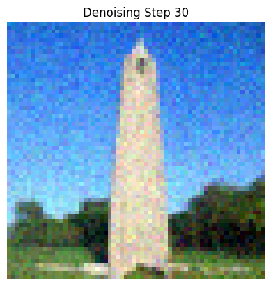
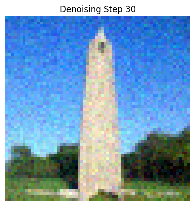
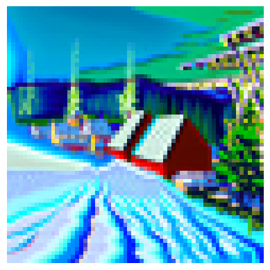
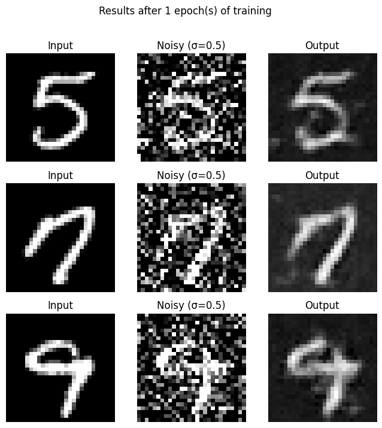
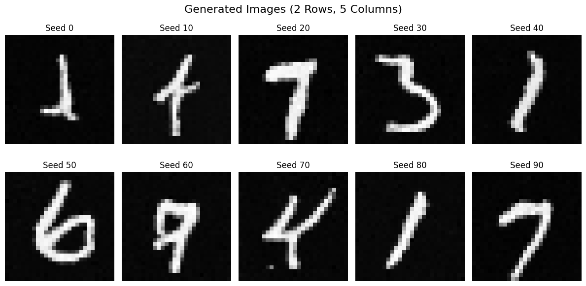

This project was a hands-on introduction to the world of diffusion models. In Part A, we used a pretrained diffusion model to generate images, denoise images, and create visual anagrams. In Part B, we implemented a diffusion model from scratch, and explored the effects of different settings on the generated images.
RANDOM SEED USED THROUGH THE PROJECT: 29
Here, we try image generation via DeepFloyd for different prompts and different number of inference steps. We can see that as we increase the number of inference steps, the image becomes higher and higher quality.
"a rocket ship" at 5 inference steps
"a rocket ship" at 20 inference steps
"a rocket ship" at 40 inference steps

"an oil painting of a snowy mountain village" at 5 inference steps

"an oil painting of a snowy mountain village" at 20 inference steps
"an oil painting of a snowy mountain village" at 40 inference steps

"a man wearing a hat" at 5 inference steps

"a man wearing a hat" at 20 inference steps
"a man wearing a hat" at 40 inference steps

The forward process in a diffusion model gradually adds noise to a clean image, making it progressively noisier as the timestep increases. In this process, you start with a clean image, x0. Then, we leverage the `alphas_cumprod` array to control the noise scaling at each timestep. At each timestep, the clean image is scaled by a factor depending on the value `alphas_cumprod` at the particular timestep, as well as added to by some variance that also depends on the value. As a whole, the image becomes progressively noisier as the timestep increases.
Below, we can see the results of the forward process at several different timesteps, starting with the clean image at timestep 0, and ending with the final noisy image at timestep 1000. The clean image here is used throughout Project 5A, and is a picture of Berkeley's Campanile.

In this section, we use Gaussian blur filtering to attempt to denoise the image. This leverages the TensorFlow `gaussian_blur` function. However, we did not get good results, as the noise was not removed effectively.
Below, we can see the results of classical denoising on the noisy image at different timesteps. We can see that as a whole, classical denoising is not that effective, and that the larger the timestep is for the noisy image, the worse the denoising is.

Here, we use a one-step pretrained diffusion model to denoise the image. The UNet was trained on a very large dataset of pairs of original and noisy images. We can use the model to recover Gaussian noise from a noisy image, and then remove the noise to recover something close to the original image. The model was trained with text conditioning, and thus we must provide a text prompt embedding when denoising. For our example here, we use the phrase "a high quality photo."
Here, we can see the results of one-step denoising on the noisy image at different timesteps. We can see that as a whole, one-step denoising is much more effective than classical denoising. Additionally, the larger the timestep, the farther the final result from the original "clean" image.

In 1.3, we noticed the quaality of one-step denoising worsened as the timestep increased. In 1.4, we denoise iteratively. There is a formula for an estimate for the image at the each timestep, which leverages (1) the values of `alphas_cumprod` at the current and previous timesteps, and (2) the model prediction for the clean image at the current timestep, (3) the image at the previous timestep, and (4) variance.
Just like in 1.3, we use UNet and the prompt "a high quality photo" to estimate noise for each timestep, and use this estimate of noise to make our estimated "clean" image at that timestep.
In theory, we could do all timesteps going from T=1000 to T=1, but in practice, we can skip some of timesteps with a stride greater than 1. Here, we use a stride of 30, working from 990 back to 0.
Below, we can see the results of iterative denoising at every fifth timestep. As we can see, the results become progressively less noisy as we iterate.

 

Now, we can see the predicted image using iterative denoising, a single denoising step, as well as Gaussian blurring, and compare the results.

Here, we can use diffusion modeling to generate new images. We start with a random noise vector, and then iteratively denoise it using the model via the prompt "a high quality photo." This will help push the randomly generated noise vector to something in the subspace of all images that includes realistic images. We generate 5 high quality images.


Here, we use a technique called Classifier Free Guidance to generate new images. At each timestep, in addition to estimating "noise" via the prompt "a high quality photo", we also estimate the noise using the empty prompt "". We then take a weighted average of the two estimates, with the weighting factor being a scalar. We then use this estimated noise to generate good images. Magic happens when the scalar is greater than 1, and using a scalar factor of 7 leads to great results.


Similar to 1.4, we iteratively denoise images that have noise added to them here. However, here we also use the technique of Classifier Free Guidance that we developed to denoise the image. As expected, this leads to better results.
In addition, we can see the higher lower the starting index/the higher the initial noise, the farther the final clean estimate is from the original image. This is because the higher the initial noise, the more variability is introduced throughout the denoising process.
Here, we can see the results of this procedure on the test image:
Now, we can see the results on two other images.
Original image:

Results:
Original image:
Results:

Here, we apply the techniques we developed to iteratively denoised both hand-drawn and web images that have noise added to them. We can see results below.
Original image:

Results:

Original image:

Results:
Original image:
Results:

Via inpainting, we're able to "fill in" parts of an image that are missing. Here, we create a "mask" of images — where the mask is set to 1, we keep the image as is. However, where the mask is set to 0, we attempt to fill in the missing parts of the image. This inpainting code uses a Stable Diffusion model to iteratively fill in missing parts of an image by further refining noise estimates at each timestep. Starting with a masked image, it predicts how the missing regions should look based on a prompt and blends these predictions with the original unmasked areas.
Original image and mask:

Results:

Original image and mask:

Results:

Original image and mask:
Results:
Here, we do the exact same thing as in 1.7 (guiding an image back from having noise to being cleaner), but instead of using a more general prompt like "a high quality photo," we become creative and use different prompts. This means that as an image is denoised, it becomes closer to the original/clean image while also being influenced by the prompt. We can see examples below.
Applying the prompt "a rocket ship" to the test/original image of the Campanile:
Results:

Applying the prompt "a photo of a dog" to the following image of a rickshaw:
Results:

Applying the prompt "an oil painting of a snowy mountain village" to the following image of Gotham City:
Results:

In this part of the project, we create visual anagrams. For each visual anagram, the image looks like one prompt when viewed, but looks like another prompt when the image is flipped (aka, rotated 180 degrees). The way we do this is very creative.
Our process is a lot like CFG, leveraging an estimated noise at the different timesteps to make a progressively more clear denoised image. However, to make visual anagrams, we generate an estimate for noise for both (1) the image in the original direction, based on one prompt, and (2) the image in the flipped direction, based on another prompt. We then take the average of the two estimates. We use this estimate of noise to iteratively denoise. This leads to a denoised image that looks like the first prompt when viewed in the original direction, and looks like the second prompt when viewed in the flipped direction.
Anagram: "an oil painting of an old man" (straight) and "an oil painting of people around a campfire" (flipped)
Anagram: "a pencil" (straight) and "a rocket ship" (flipped)

Anagram: "an oil painting of a snowy mountain village" (straight) and "a photo of the amalfi coast" (flipped)
Here, we create "hybrid" images that are aligned with one prompt when viewed at closely, and another prompt when looked at from a distance.
Just like in 1.8, we use a variation of CFG to iteratively denoise. However, at each timestep, we generate an estimated noise for both (1) the image based on the "close" prompt, and (2) the image based on the "far" prompt. We then run the first noise estimation through a high-pass filter, and the second through a low-pass filter. We then add the two results together to get a hybrid image. This is because high frequencies are more visible when viewed closely, and low frequencies are more visible when viewed from a distance.
Hybrid Image: "a lithograph of waterfalls" (close) and "a lithograph of a skull" (far)

Hybrid Image: "an oil painting of a snowy mountain village" (close) and "a photo of a dog" (far)
Hybrid Image: "a man wearing a hat" (close) and "a rocket ship" (far)
Here, we implement a single-step denoising UNet. It uses the architecture outlined in the instructions, involving upsampling, downsampling, and skip connections. We train the UNet to minimize the L2 loss between the predicted denoised image and the original image. We use a number of different "blocks" that we create, involving standard tensor operations including convolutions, concatenation, GELU, etc.
In order to validate the results of the UNet, we need to generate noisy images. Here, we can see that we take clean images from the MNIST dataset. We then add varying amounts of noise to each image (as indicated by the sigma value). We leverage a Gaussian distribution to generate the random noise.
Next, we need to actually train the UNet. We use the MNIST training set with the original images, as well as "noisy" versions of each of the images with a sigma value of 0.5. We use a number of hidden dimensions of 128, run over 5 epochs of training, a learning rate of 1e-4, and batch size of 256. The resuls of the training are shown below.
Now, we're able to visualize the training process. Below, we can see the original image and noisy image the model trains on, followed by the predicted denoised image. We can see such results for after epoch 1 of training, and after epoch 5 of training.
Finally, we are able to validate our results and use the UNet for inference. We run the denoising process on images not part of the training set. Additionally, we run the model not just on noisy images with sigma=0.5, but also, images with sigma in [0.0, 0.2, 0.4, 0.6, 0.8, 1.0] to ensure that the model generalizes to denoising a range of amounts of noise. We can see the results below.
Now that we know how to make a single-step denoising UNet, we go broader and train a UNet that can iteratively denoise an image, producing better results. Minimizing the L2 loss is still the north star, but here, we use the difference between the predicted noise and actual noise, rather than predicted image and original image.
The first step is ensuring our model is time-conditioned. To do this, we revisit our original UNet architecture, but add new blocks to factor in the time dimension. After that, use a formula to train this time-conditioned UNet, applying different amounts of noise to the clean image based on the timestep, and having the model train on the clean image, noisy image, and corresponding timestep. We can see the loss curve of the model training below:

We can now use the model for inference and use the model to denoise images. However, if we start with pure noise, our model can serve to effectively generate images of numbers. We can see below the results of the model generating images of digits, after 5 epochs of training and after 20 epochs of training. However, one drawback we notice is that while the results do look like written characters, many of them do not easily resemble one of nine actual digits. This is because the model is not conditioned on the actual digit that is written, which is the final part of the project.
Results after 5 epochs of training:
Results after 20 epochs of training:
Finally, we condition the model on the actual digit that is written. We do this by adding more blocks to the original UNet architecture (the way we did to factor in time), and then during training, passing in the one-hot encoding of the digit. (However, 10% of the time, we passed in a zero vector, as we want the UNet to work without it being conditioned on the class.) We can visualize the training via the loss curve below:
Finally, we can see the results of running inference with the model. When generating images (aka denoising "images" that are pure noise), we can also specify the 0-9 digit we want generated. This leads to all the images generated below matching distinctly to one of the digits 0-9. We can see the results below for the model after 5 epochs of training, and after 20 epochs of training.
Results after 5 epochs of training:
Results after 20 epochs of training: